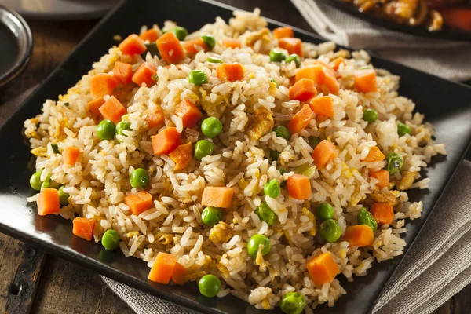

Fried Rice

Description
Fried rice is a dish of cooked rice that has been stir-fried in a wok or a frying pan and is usually mixed with other ingredients.
It is often eaten by itself or as an accompaniment to another dish.
Ingredients
- Rice
- Vegetables
- Seafood
- Eggs
- Sauce
Steps
- Chop and Prepare the Ingredients.
- Season the Meat and Prepare the Egg and Rice.
- Mix the Ingredients.
- Add Soy Sauce, Oyster Sauce and Salt to Taste.
- Serve